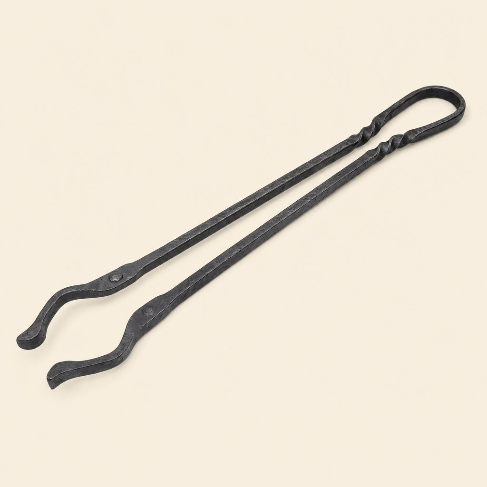

Home / Gear / Forged Ember Tongs
Forged Ember Tongs (16-inch)
$26

What it is
A nimble pair of mild-steel tongs hand-forged by an Oregon blacksmith. Long enough to keep knuckles back, short enough to give control around a skillet.
Specs
- Length
- 16 inches
- Material
- Hand-forged mild steel
- Handle
- Twisted grip
- Weight
- 14 oz
- Uses
- Moving logs and coals; turning food
How to use it
Grip near the twist, test your hold, and move one coal or small log at a time. Use the clean tips for food. Keep a separate dirty zone if you are tending both dinner and fuel.
Care
Wipe clean, dry near gentle heat, and add a thin coat of food-safe oil. Scrub away any surface rust before use.
Good to know
Steel conducts heat. Gloves are wise, and 16 inches is not a license to reach into flames. Hand-forging leaves small variations in twist and texture.
Guarantee
Covered for life against manufacturing defects. See returns and our guarantee.